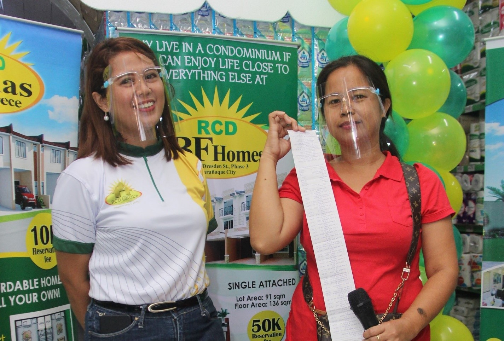
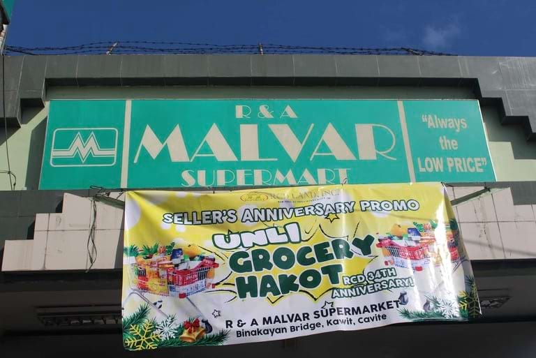
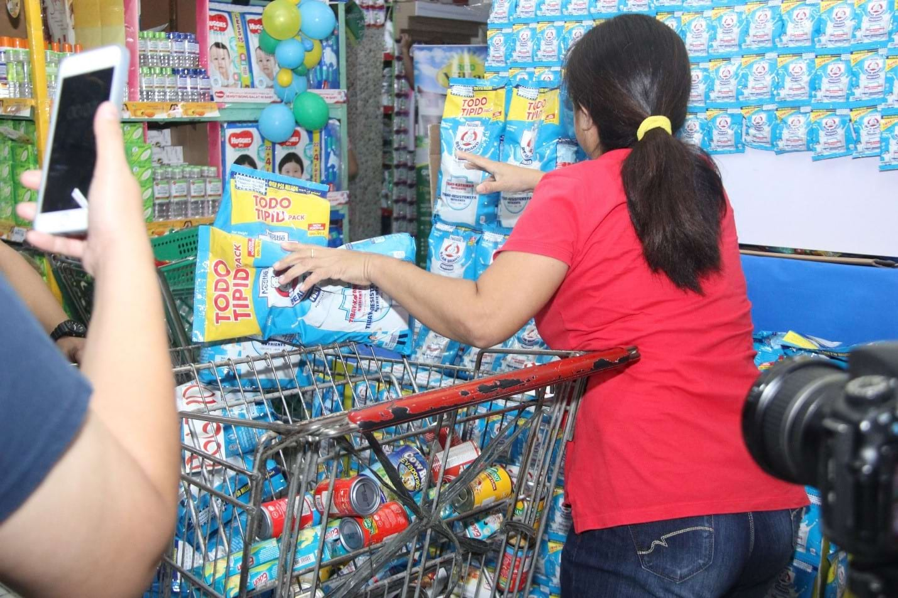

<section class="mt-[81px] py-20 bg-[#f7f7f7]">
    <div class="max-w-7xl mx-auto px-4">

        <!-- Section Header -->
        <div class="mb-12">
            <div class="max-w-5xl mx-auto flex items-start space-x-4">
                <div class="w-1 h-40 bg-green-500"></div>
                <div>
                    <h2 class="text-4xl font-bold text-gray-800">RCD Land’s 34th Anniversary Seller Promo: Unli Grocery
                        Hakot
                    </h2>
                    <p class="text-gray-600 text-base mt-1 max-w-2xl">
                        RCD Land Inc. celebrated its 34th founding anniversary last August 2021. In line with this, the
                        company extended its gratitude to its sellers through the UNLI GROCERY HAKOT promo!
                    </p>
                </div>
            </div>
        </div>

        <!-- Centered Photo -->
        <div class="flex justify-center my-12">
            
        </div>

        <!-- Author/Meta Info -->
        <div class="flex justify-center mb-8">
            <span class="text-sm text-gray-700">
                <span class="font-semibold">Author:</span> Nicole Dizon&nbsp;&nbsp;
                <span class="font-semibold">Category:</span> Mobile App&nbsp;&nbsp;
                <span class="font-semibold">Date:</span> <span>August 2021</span>
            </span>
        </div>

        <!-- Article Content -->
        <div class="max-w-3xl mx-auto text-gray-700 text-sm leading-relaxed px-4">
            <p>
                All sellers had the chance to qualify to this promo for all sales reservations made within the period of
                July 1 to August 31, 2021. It is to note that 1 million worth of sales reservation on RCD Land projects
                equates to one (1) raffle entry to the unli grocery hakot. The winner was chosen through the spin the
                wheel application
            </p>

            <!-- Centered Photo -->
            <div class="flex justify-center my-12">
                
            </div>

            <p class="mt-6">
                The grocery hakot was held in R.A. Malvar Supermarket in Kawit, Cavite last October 30th of 2021. The
                event was hosted by Marlyn De Llamas, Site Officer of RCD Land, and was attended by a few RCD employees
                and members of the winner’s realty.
            </p>

            <!-- Centered Photo -->
            <div class="flex justify-center my-12">
                
            </div>

            <p class="mt-6">
                Bernadette Tendero from Rise and Shine realty was the lucky winner of the promo. She was given 2 minutes
                to strategize within the premises of the grocery store and another 1 minute for the actual loading of
                her cart for the grocery hakot challenge. Ms. Tendero wasn’t only lucky but a great strategist as well
                because she was able to take home 32, 869 pesos worth of groceries within that 1 minute of loading her
                cart!
            </p>

            <!-- Centered Photo -->
            <div class="flex justify-center my-12">
                
            </div>

            <p class="mt-6">
                The unli grocery hakot is just one of the many seller promos that RCD Land does and creates to
                continuously extend its gratitude and motivate its sellers for their effort and support in selling and
                promoting RCD Land projects nationwide.
            </p>

            <p class="mt-6">
                More exciting promos and fun activities await for RCD sellers, you may like our page
                <a href="https://www.facebook.com/RCDLandIncOfficial" class="font-bold text-black-600"
                    target="_blank"><b>RCDLandIncOfficial</b></a>
                or add our seller account
                <a href="https://www.facebook.com/rcdlandsellers" class="font-bold text-black-600"
                    target="_blank"><b>RCD Land Sellers</b></a>
                in Facebook to be updated on all our ongoing and upcoming seller promos.
            </p>

            <p class="mt-6">
                You may also watch the full unli grocery hakot video
                <a href="https://www.facebook.com/rcdlandsellers/videos/10159862620513793"
                    class="font-bold text-black-600" target="_blank"><b>here</b></a>.